seçili işler
Burayı iki bölüme ayırdım: biri kalemden çıkanlar, diğeri logolar ve tasarım işleri.
01 / çizim arşivi
Çizimler ve Karakter Çalışmaları
Portreler, dijital eskizler, karakter fikirleri ve aklıma takılan diğer şeyler.

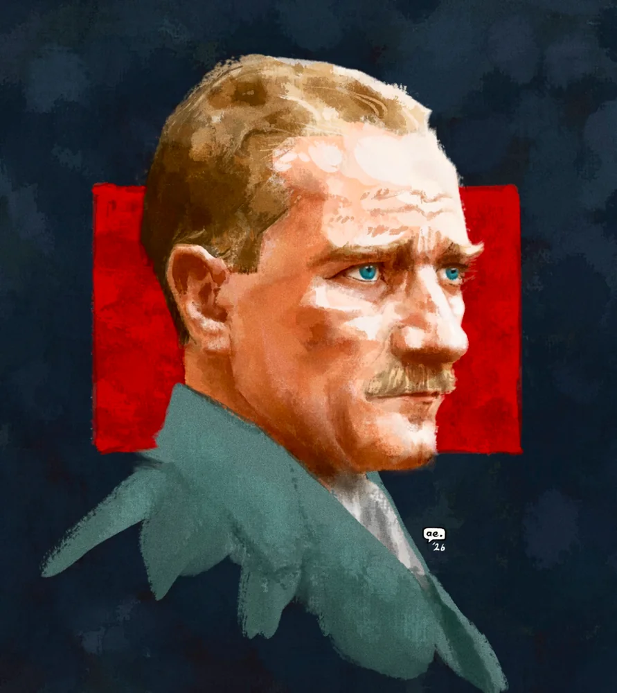

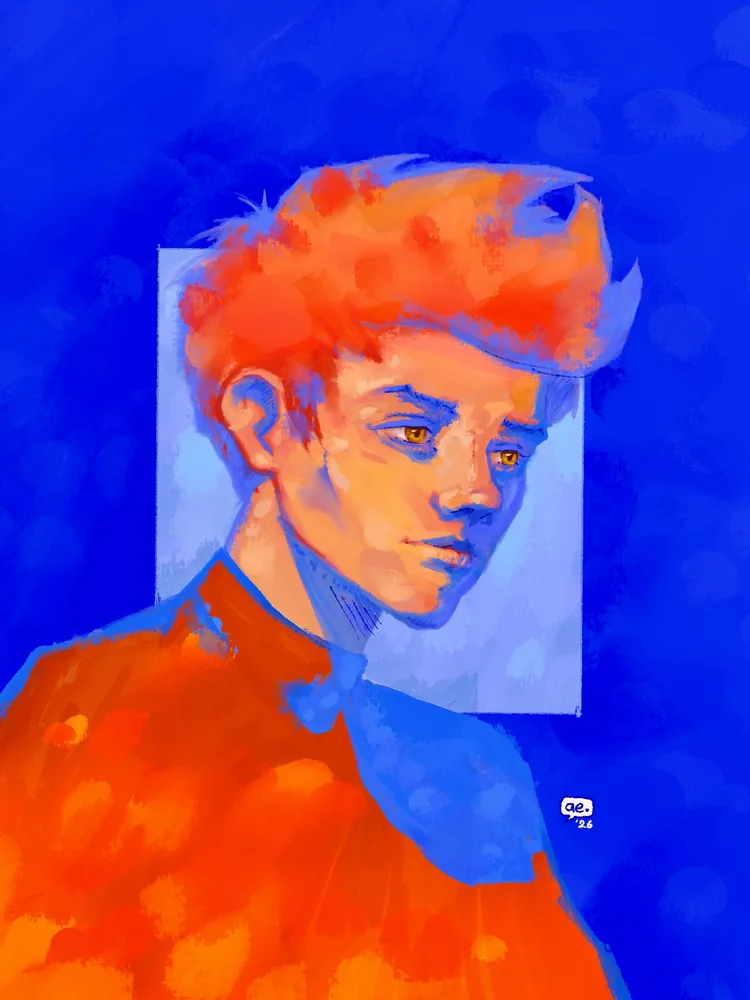

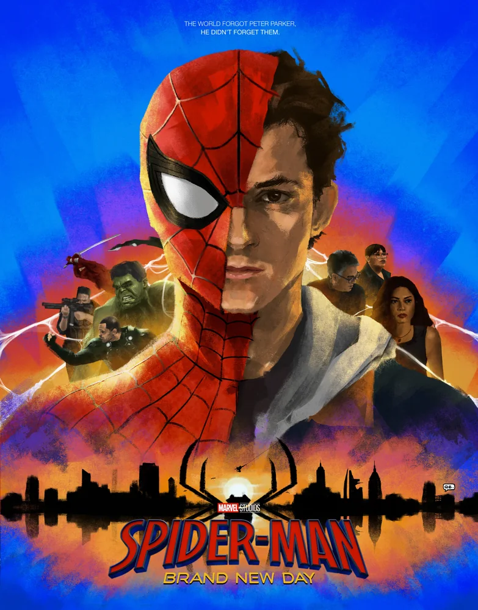

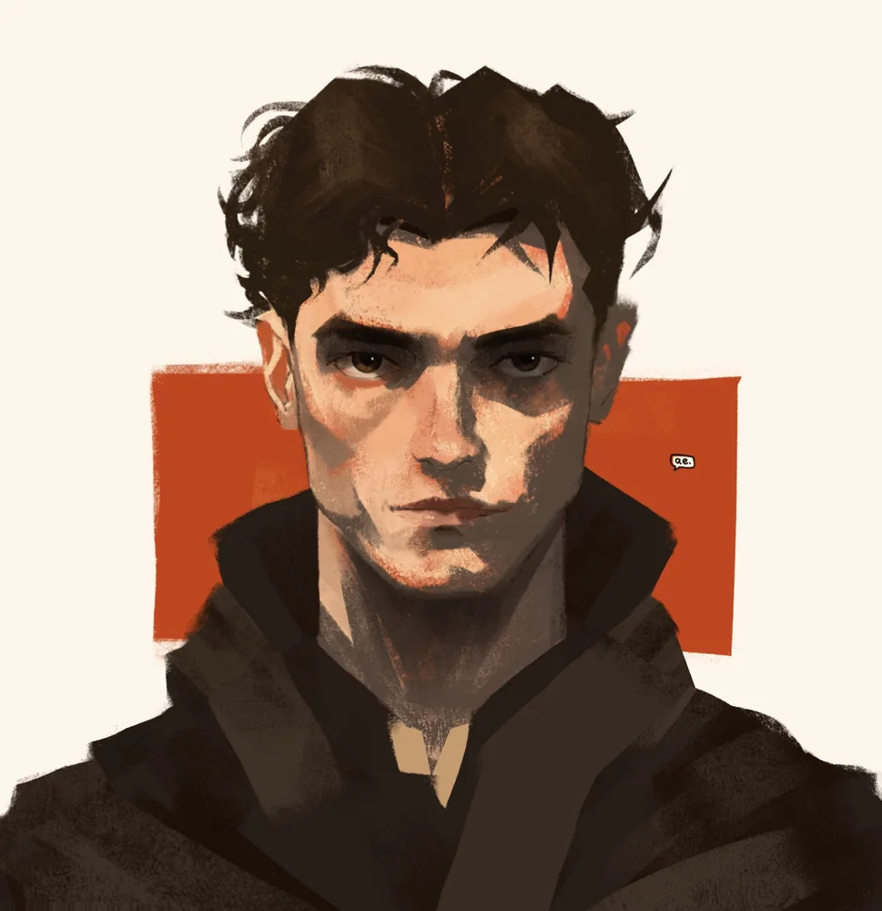

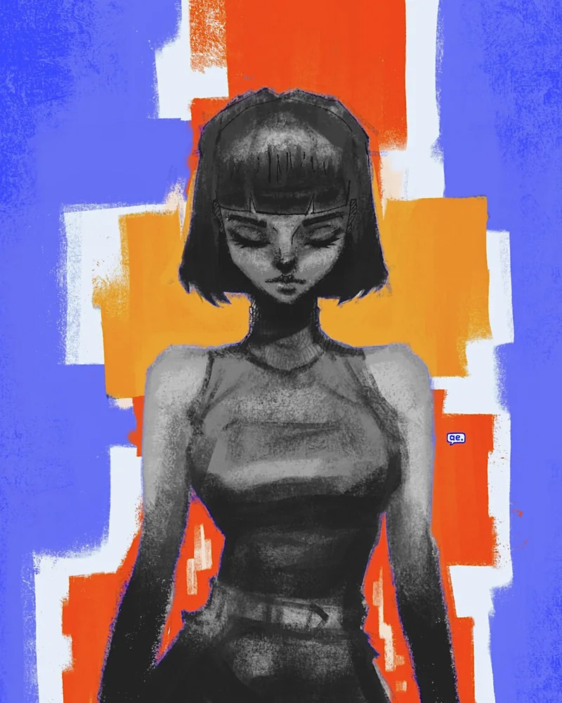

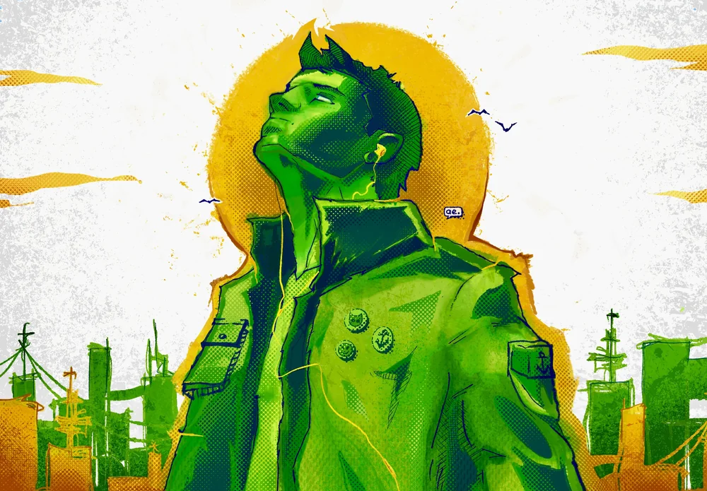

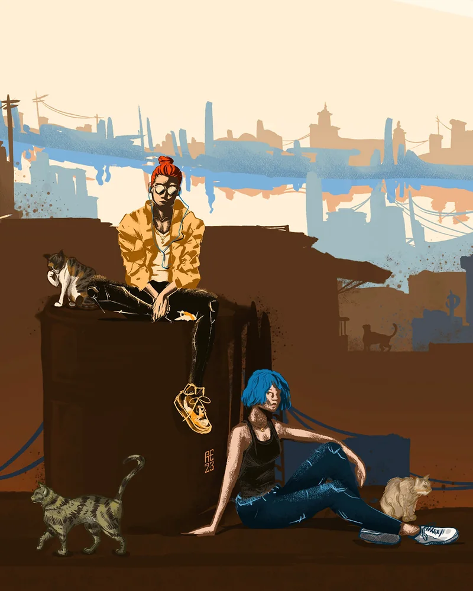

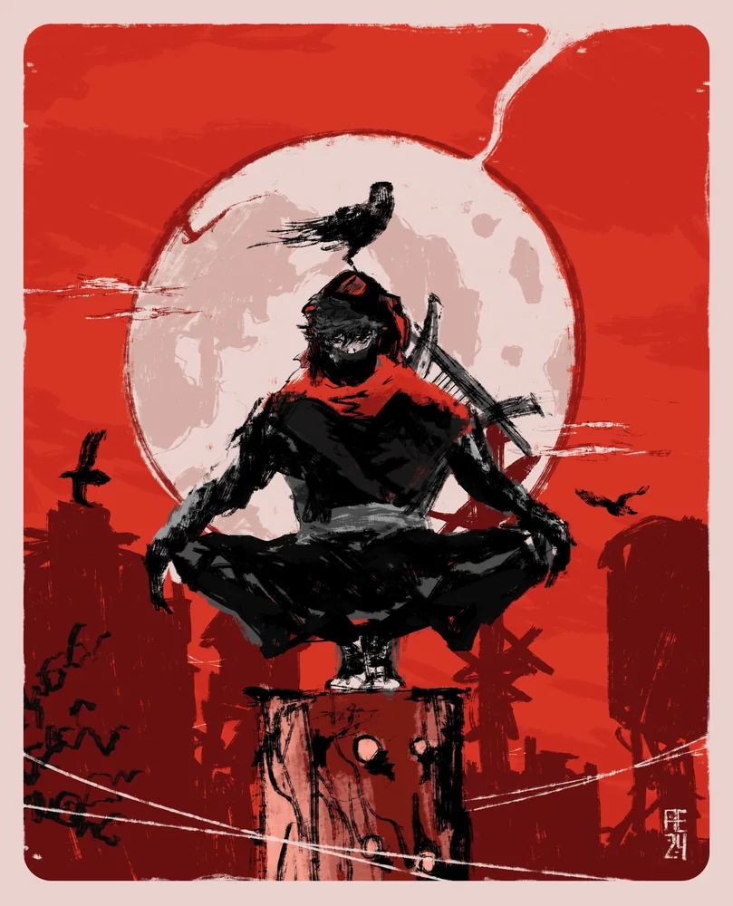

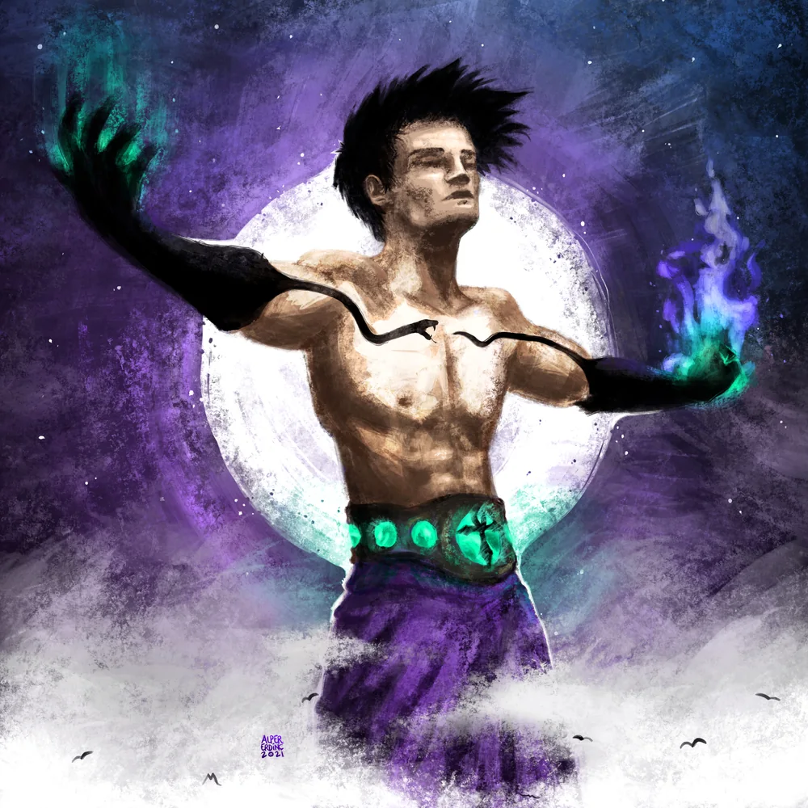

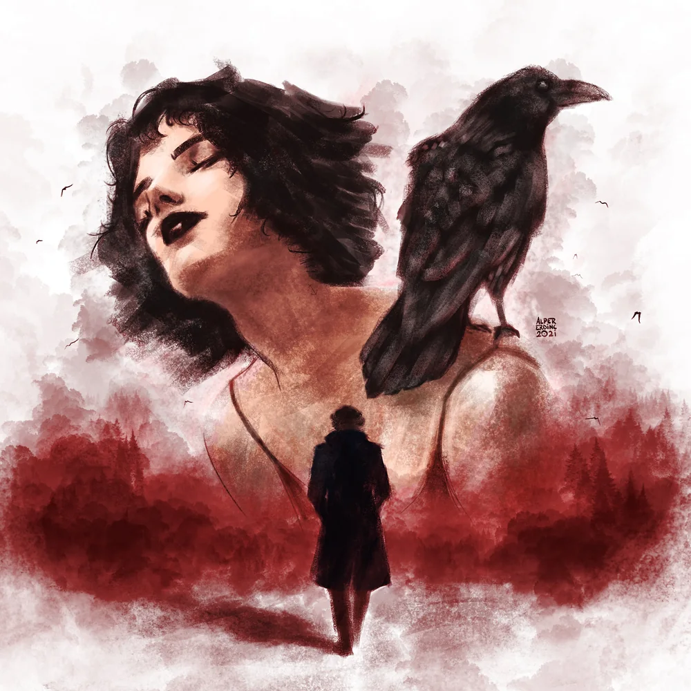
02 / tasarım işleri
Logo ve Tasarım Çalışmaları
Logo denemeleri, marka fikirleri, afişler, sosyal medya görselleri ve arayüz işleri.


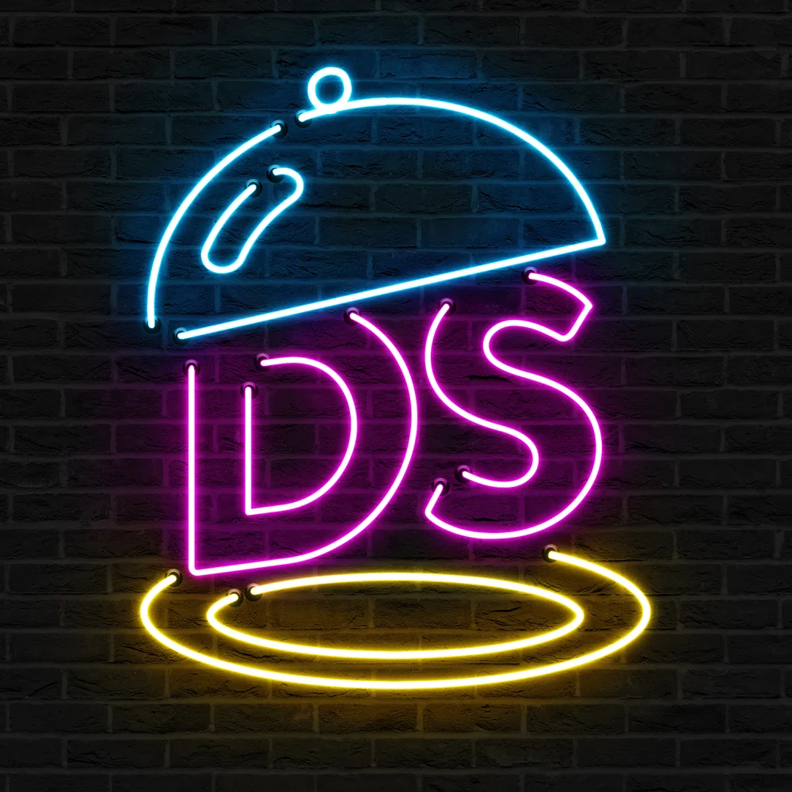


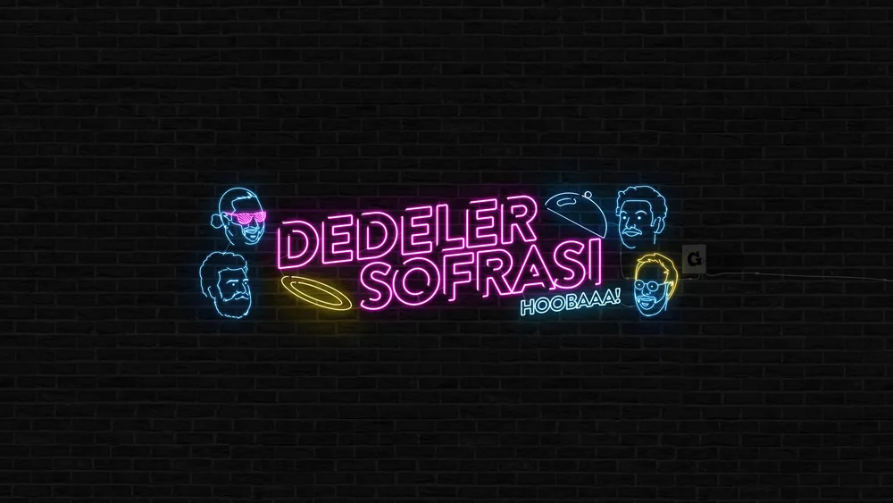
not
Galeri zamanla büyüyecek. Yeni bir şey çizip beğendikçe buraya ekliyorum; beğenmediklerim çekmecede kalıyor.